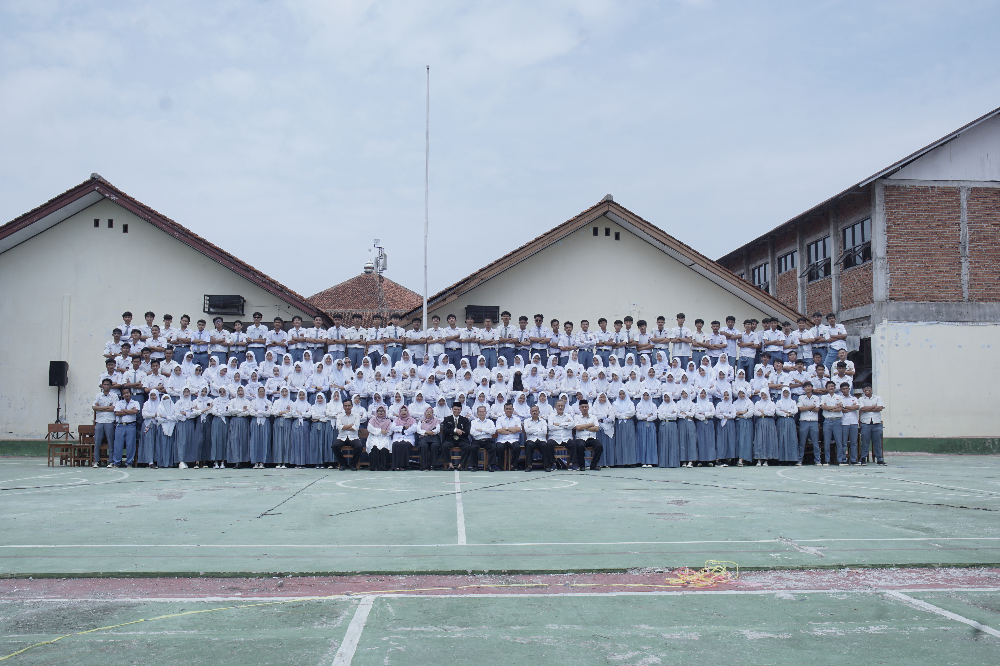
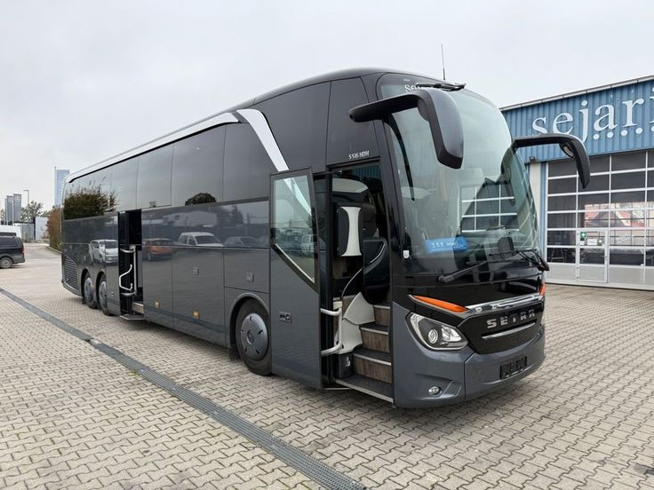
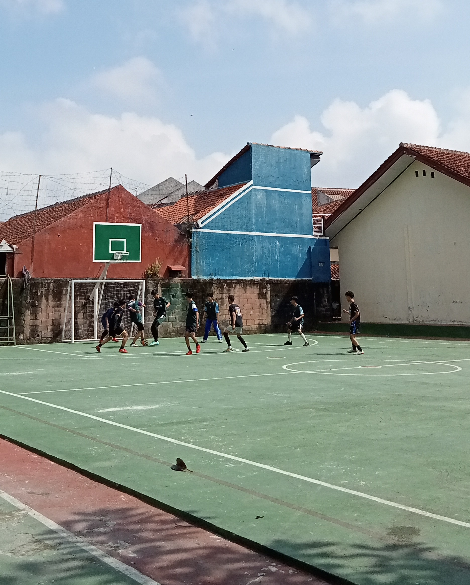
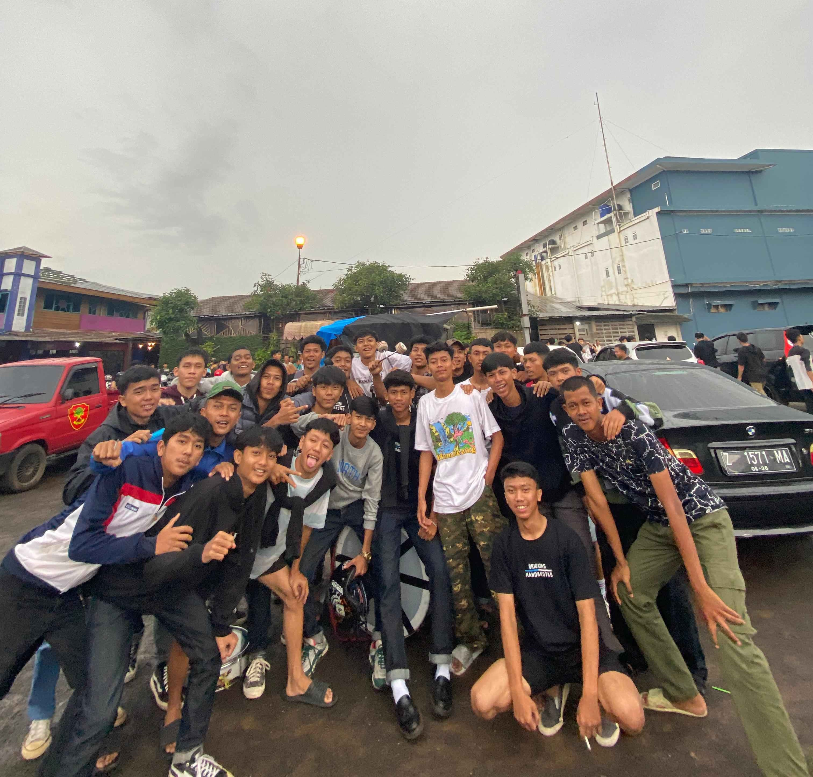
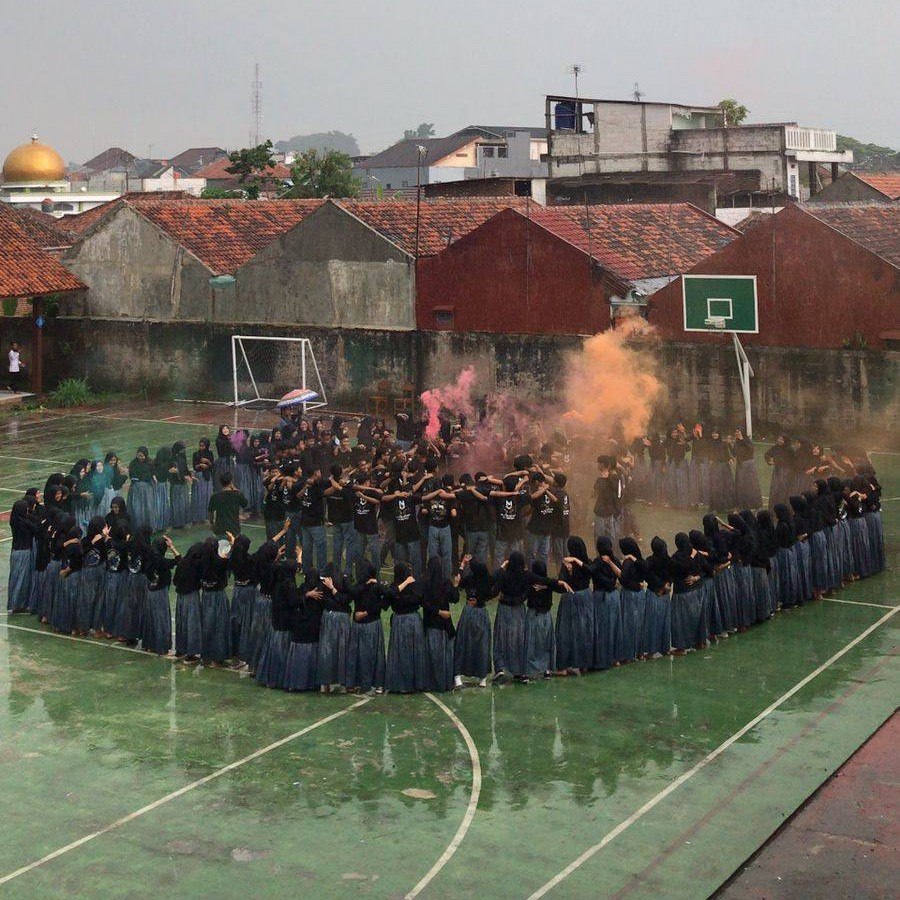

Tasikmalaya, Jawa Barat · 2026
Membangun generasi muda yang berahlak mulia,
Mempersiapkan Pemimpin Masa Depan dengan Nilai &
Karakter

MAN 2 Kota Tasikmalaya adalah institusi pendidikan terkemuka yang berdedikasi membangun insan pembelajar yang cerdas, berintegritas, mandiri, dan berdaya saing global. Kami memadukan keunggulan akademik dengan nilai-nilai pekerti luhur untuk mempersiapkan masa depan setiap peserta didik.
Memadukan Kurikulum Merdeka Nasional dengan pengayaan bertaraf internasional untuk memperluas cakrawala siswa.
Pendidik berintegritas yang berperan sebagai fasilitator, mentor, serta pembimbing eksplorasi bakat setiap siswa.
Pendekatan berbasis riset (Project-Based Learning) dan integrasi teknologi untuk pemecahan masalah dunia nyata.
Fokus pada pencapaian prestasi akademik, kejuaraan sains, literasi bahasa, dan kepemimpinan pemuda.

Membentuk karakter seimbang melalui pengasuhan moral, kebugaran fisik, seni budaya, dan kecerdasan intelektual.

Ruang kelas interaktif ber-AC yang dilengkapi smart screen dan audio visual terintegrasi.

Lab fisika, kimia, dan biologi lengkap untuk mengasah rasa ingin tahu dan inovasi praktikum.

Koleksi ribuan buku fisik dan referensi digital internasional di ruang baca yang hening & nyaman.

Layanan antar jemput siswa dengan armada bus sekolah modern ber-AC dan pantauan GPS real-time.




